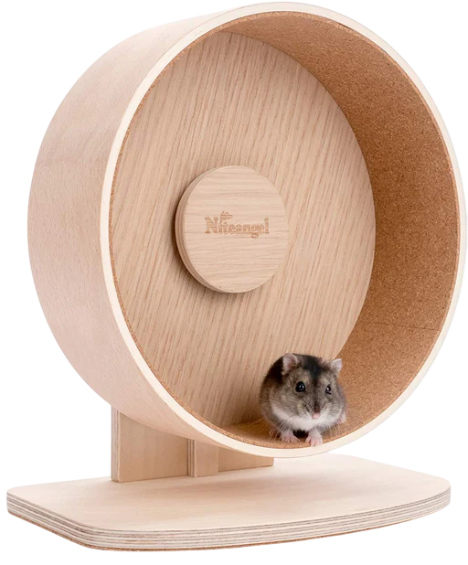
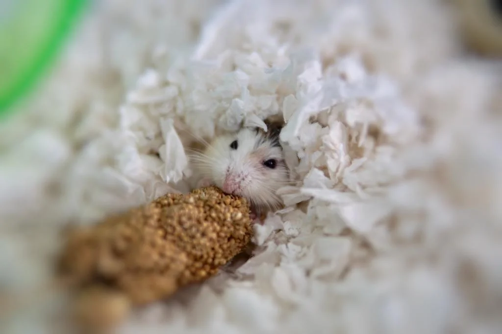

Enclosure Essentials
What to put inside a hamster's enclosure
A complete guide on setting up a hamster's enclosure
Why Does Clutter Matter?
Clutter or just basically anything that your hamster uses, like hides, toys, textures and other enrichment. A thriving hamster needs as much clutter as possible because they actually like being in these kinds of setups, because it makes them feel safe. There's also certain types of clutter that every hamster setup needs before putting the hamster in, that's why they're essentials.
Here I will bring out all the clutter that you need to have to make your hamster thrive!
A good running wheel is a must, they will run on them for several kilometers per night
Everything you need in your hamster's enclosure:
1. Bedding
2. Hamster Wheel
3. Hides
4. Sand Bath
5. Chew Toys
Bedding is one of the most important in hamster lives, for example there was a study made where hamsters with 80 cm of bedding never gnawed on the bars or the water bottle. Of course most of us can't give them that much bedding, but it's still important to give at the minimum 25 cm of bedding all throghout the cage.
It's also important to have the right kind of bedding, because there are so many types. One of the best beddings you can provide to your hamster is paper bedding, but also certain types of wood shavings beddings are also fine. Best wood shavings are aspen shavings and other good types are hemp bedding and also kiln-dried pine, but if you want to use pine, it needs to be explicitly said it's "kiln-dried" as the process takes out the harmful oils. Certainly do not use non kiln-dried pine, cedar and other types that I haven't mentioned as safe.
If you decide to use wood shavings as the main bedding, mix in some soft hay. Hay will help the tunnels your hamster digs stay as tunnels, so they won't immediately break down, but also remember to push down on all of the bedding so the tunnels would stay even better and it would be easier to put clutter on the ground.
A hamster wheel is very important because of many different reasons
First of all, hamsters in the wild run 5-12 km per night, so if they don't get as much exercise as needed, they could quickly gain weight. Obesity in hamsters is also linked to diabetes, especially in dwarf hamsters, heart strain and shortened lifespan as well. All these things need to be prevented to keep a hamster thriving.
It's also not just physical, mental as well. Hamsters can get quickly bored and the wheel is one of the main things that breaks their boredom and stress. It heavily relieves stress in them and exercise overall lowers stress hormones and helps regulate energy.
It's also needed to be mindful of, that the wheel needs to let the hamster be able to run without their back arching, so their back would be fully straight.
For Syrian hamsters and chinese hamsters, the minimum wheel size is 28 cm and for other dwarf hamsters it's 21 cm.
The wheel needs to be fully solid as well, no mesh wheels or wheels with ridges. Niteangel hamster wheels on Amazon.de are great, but with all plastic wheels it's recommended to install a light cork panel or so, because they can easily slide off. Other great wheels are cork wheels, but they can easily get peed in by the hamsters who treat them as a bathroom and are harder to clean and but if you have a hamster who doesn't pee it full every night, it's a great option.
Hides are very important, as you'll need to put at least 3 different in 1 enclosure, so the hamster could feel as safe as possible. Dwarf hamsters will enjoy closed ceramic hides as well but Syrians will mostly use bigger guinea pig hides without a bottom so they can start their burrows from there. From my experience take the ones that have no bottoms, because their burrows are really important.

A sand bath is a must, that is the only way for your hamster to clean itself. They will enjoy digging in sand as a form of cleaning or also more commonly seen in dwarf hamsters, rolling in the sand. Because of that, use big containers so they can properly do the things they want in it. Sometimes they'll also use the sand as a bathroom, so you'll need to often clean it. There is no certain needed sizes for sand baths, but ice cream containers, the horizontal ones that are bigger will do great or also just the commercially available ones online specifically for hamsters.
You need to use as the sand calcium- and mineral free reptile sand or playsand. Using normal chinchilla dust is extremely unhealthy, because hamsters have very weak respiratory systems.
Do not ever, if not 100% needed, wash your hamster with any "pet cleaning sprays" or just water, because they have special oils on their skin which keep them healthy.

Note: Chewing on bars on a cage is a stress behaviour, if your hamster does it consistently, upgrade your hamster's cage to at least 100x50 cm enclosure. More about them in Enclosures
Chew toys are very important for hamsters, as their teeth grow consistently all the time. They can grind their teeth a bit on the food but some wooden chew toys or other similar things are essential to keep their teeth healthy.
Best chew toys are things anything that aren't toxic or poisonous, like things with toxic glues, plastic or anything similar. Most natural items are the best.

Discussion Board
Share your thoughts, ask questions, and join the conversation below.